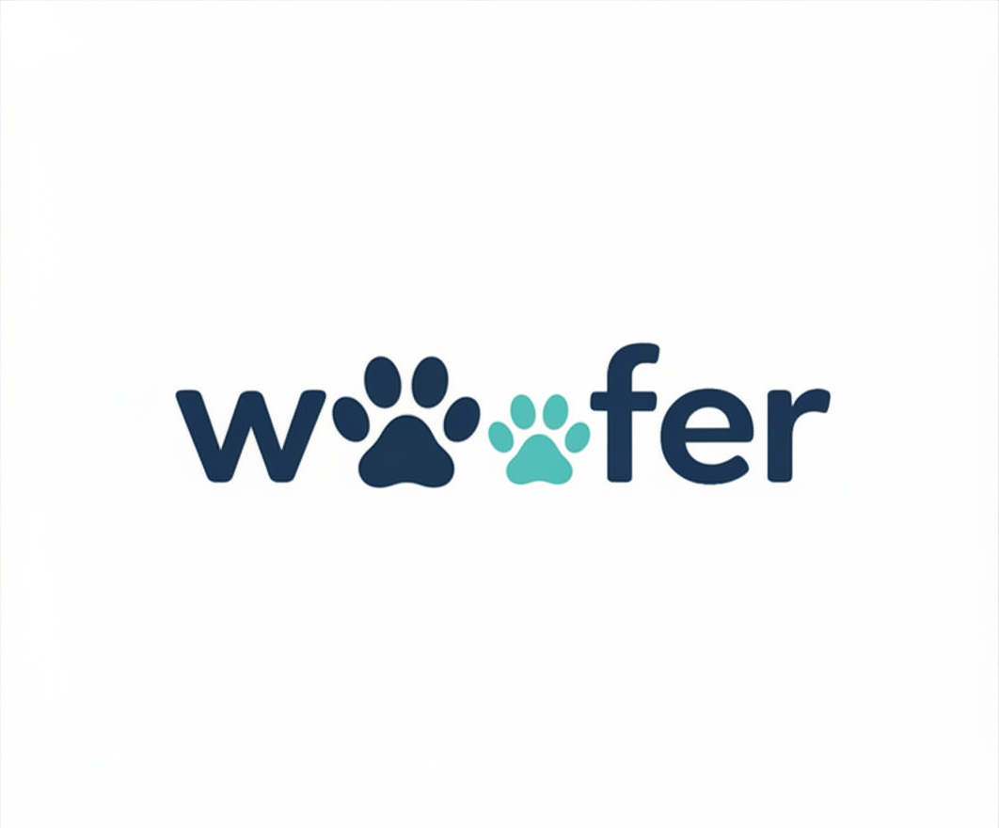

Trust-first applications
Woofer is designed to reduce shelter burden by making application intent clearer before an organization ever opens the handoff packet.

Current design implementation (beta) · Greater Los Angeles soft launch
Ethical pet adoption
Woofer helps future pet parents browse thoughtfully, verify their intent, and send stronger rescue-ready application packets without turning adoption into a paywall.
Woofer is designed to reduce shelter burden by making application intent clearer before an organization ever opens the handoff packet.
The current beta is intentionally narrowed to Greater Los Angeles so we can stress-test the platform, tighten ingest quality, and refine the real adoption loop.
We’re using AI to improve pet storytelling, choose stronger feed photos, and make the product feel more intentional without adding clutter.
What happens in beta
Woofer’s current beta centers on four things: cleaner pet data, lighter UX, stronger verification, and more reliable rescue handoff. We’re building the full concept web-first before mobile follows.